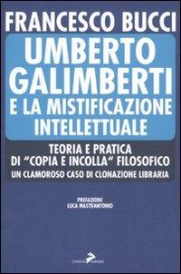
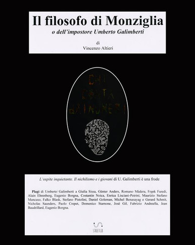
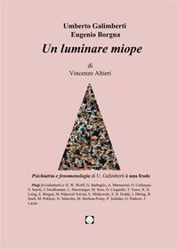
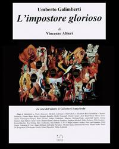
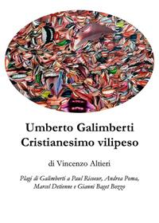
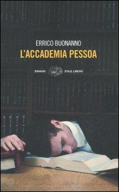
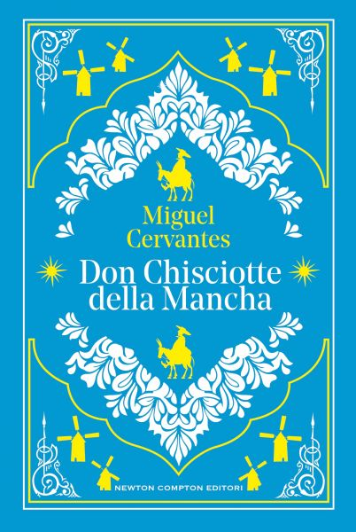
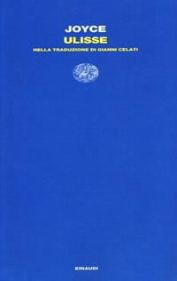

42:27 · 10 OPERE
Umberto Galimberti e la "cultura" del plagio.
Il filo del discorso
L’etica della cultura non coincide, per il relatore, con il prestigio di chi parla: il caso delle contestazioni a Umberto Galimberti gli serve per discutere citazione, originalità e responsabilità degli editori. Presenta il libro di Francesco Bucci e alcuni titoli di Vincenzo Altieri, confronta brani attribuiti a Galimberti ed Ehrenberg e critica le difese pubbliche del riuso testuale. La polemica si estende a Vattimo, a un articolo di Errico Buonanno e al rapporto fra riconoscimento mediatico e qualità del lavoro. Nel finale l’industria culturale di Adorno e Horkheimer diventa la cornice di una tesi più generale: ripetizione e omologazione renderebbero più debole il giudizio individuale. La scheda distingue contestazioni, confronti di testi, esiti istituzionali riportati e accuse personali non provate; precisa inoltre che il riuso dei propri scritti può essere lecito o scorretto secondo trasparenza, contesto e regole editoriali.
I libri nel discorso

Umberto Galimberti e la mistificazione intellettuale. Teoria e pratica di «copia e incolla» filosofico. Un clamoroso caso di clonazione libraria
Note sul riferimento
Copertina: Coniglio Editore, Roma, 2011, collana Bassi fondali; prefazione di Luca Mastrantonio.
Immagine autentica dell’opera, controllata visivamente; l’edizione di riferimento non è attribuita al filmato.
Bucci, Coniglio e titolo del libro sulla mistificazione intellettuale sono riconoscibili e in parte letti.

Il filosofo di Monziglia o dell’impostore Umberto Galimberti
Note sul riferimento
Copertina: e4659, ebook 2016, edizione digitale distribuita da StreetLib, ISBN 9788822856296.
Immagine autentica dell’opera, controllata visivamente; l’edizione di riferimento non è attribuita al filmato.
Vincenzo Altieri e Il filosofo di Monziglia espliciti, con deformazioni fonetiche nella trascrizione automatica.

Umberto Galimberti. Eugenio Borgna. Un luminare miope
Note sul riferimento
Copertina: Edizione digitale 2017, distribuzione StreetLib, ISBN 9788826071442.
Immagine autentica dell’opera, controllata visivamente; l’edizione di riferimento non è attribuita al filmato.
Un luminare miope letto nel gruppo dei libri di Altieri; titolo esteso verificato sul catalogo.

Umberto Galimberti. L’impostore glorioso
Note sul riferimento
Copertina: e4659, ebook 2016, ISBN 9788822856272.
Immagine autentica dell’opera, controllata visivamente; l’edizione di riferimento non è attribuita al filmato.
L’impostore glorioso esplicito tra i libri presentati di Vincenzo Altieri.

Umberto Galimberti. Cristianesimo vilipeso
Note sul riferimento
Copertina: Youcanprint, ebook ePub, 142 pagine nel catalogo, ISBN 9788892612761.
Immagine autentica dell’opera, controllata visivamente; l’edizione di riferimento non è attribuita al filmato.
Cristianesimo vilipeso riconoscibile tra i libri di Altieri.

L’accademia Pessoa
Note sul riferimento
Copertina: Einaudi, Stile libero, 2007, 185 pagine, ISBN 9788806188832.
Immagine autentica dell’opera, controllata visivamente; l’edizione di riferimento non è attribuita al filmato.
Accademia Pessoa e Alonso Novarro riconoscibili; autore verificato come Errico Buonanno, non Enrico Bonanno.
Perché non perdoniamo un plagio
Identificazione probabile
Note sul riferimento
Illustrazione dell’articolo: Rivista Studio, 24 agosto 2016; illustrazione originale dell’articolo, non copertina di un volume.
Fotografia autentica associata all’articolo nella pagina di Rivista Studio: due figure maschili sedute sullo stesso divano. Non è una copertina libraria o il ritratto di Buonanno e non si identifica senza fonte il soggetto di ciascuna figura.
Articolo di Buonanno per Rivista Studio e frase conclusiva sull’originalità; titolo identificato nella pagina originale, senza lettura del titolo nel video.

Don Chisciotte della Mancia
Note sul riferimento
Copertina: Newton Compton · Vintage · edizione di riferimento
Cervantes e Don Chisciotte espliciti come esempio di creazione originale, senza un capitolo letto.

Ulisse (Ulysses)
Note sul riferimento
Copertina: Einaudi, Letture Einaudi, 2013, traduzione di Gianni Celati, ISBN 9788806191818. Originale 1922.
Immagine autentica dell’opera, controllata visivamente; l’edizione di riferimento non è attribuita al filmato.
Joyce e Ulisse espliciti nell’esempio sull’originalità, non un generico Ulisse di un altro autore.

Dialettica dell’illuminismo
Identificazione probabile
Note sul riferimento
Copertina: Einaudi, Piccola Biblioteca Einaudi, 2010
Edizione illustrativa dell'opera, con traduzione di Renato Solmi e introduzione di Carlo Galli; non identificata nel video.
Adorno e la formula iniziale dell’Industria culturale sulla somiglianza; rinvio probabile al capitolo di Dialettica dell’illuminismo, scritto con Horkheimer, titolo non pronunciato.